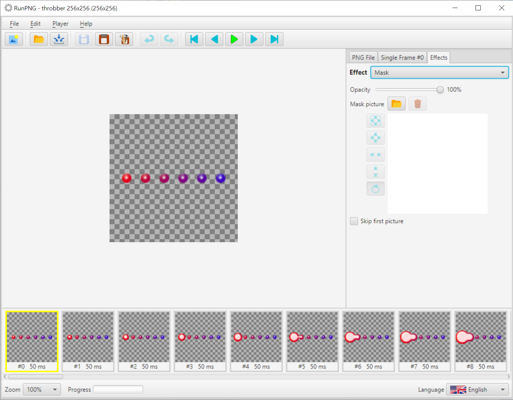
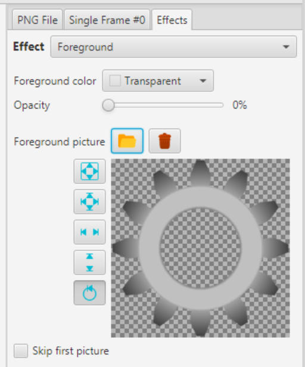
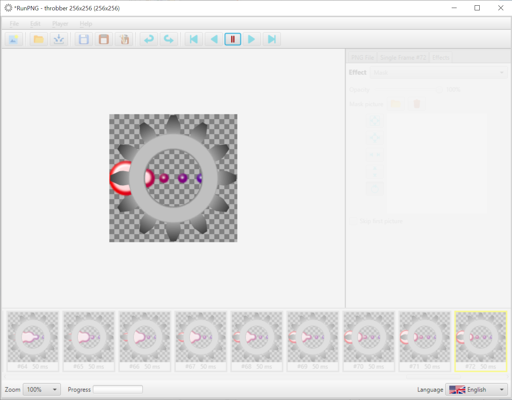
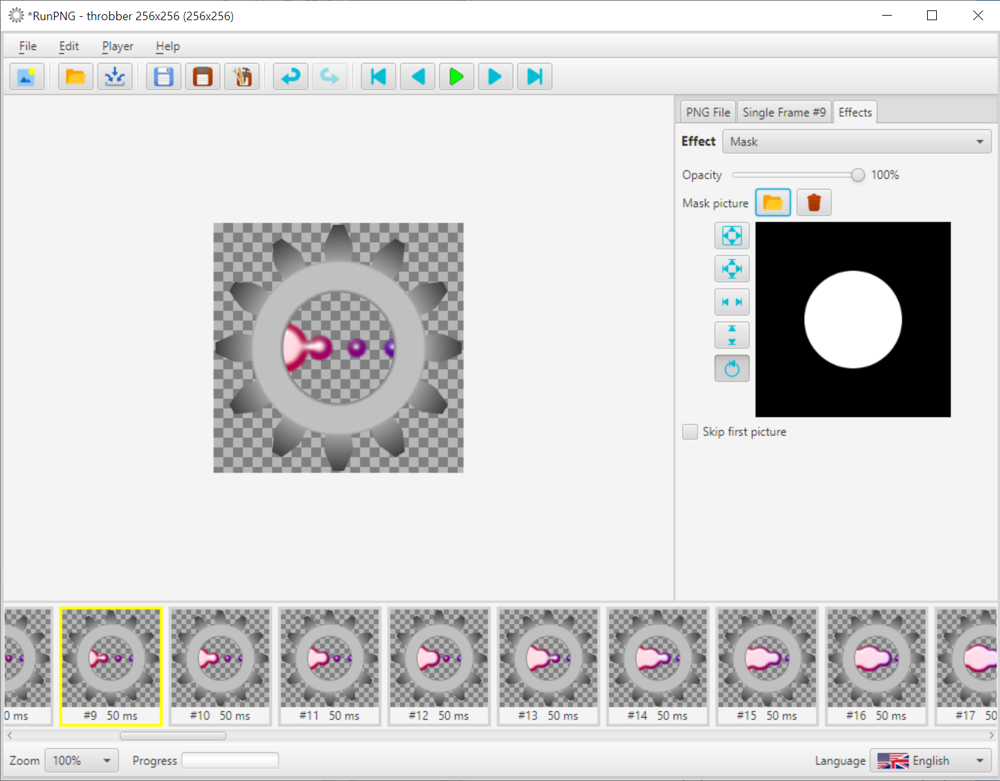

Mask
As already mentioned at another place in this manual, the mask effect is somewhat similar to the layer mask in a graphics editor. This is a masking of the graphic with a greyscale image. Whereby the color white means full representation and black means complete transparency. The nuances in between let the graphics shine through more or less.
The subject of the mask application should be the APNG file RunPNG/doc/samples/various/throbber 256x256.png. We load it into RunPNG (it consists of 80 individual images). Then we select the Mask effect under the Effects tab.
Unlike the picture boxes for the other effects, the box for the mask effect does not have a transparent background, but a white one. Transparencies are not possible here. In addition, there is no color picker. Just a slider with which you can increase or decrease the opacity. The term opacity here refers to the loaded graphic itself. If the Opacity slider is moved to 0%, the background in the box is black and the graphic is invisible. At 50% there is a visible graphic, but it is very translucent.
This would already explain the purpose of the full-surface mask. And why the area in the image box is white by default. A change directly affects the loaded pictures and makes them translucent. Which enables interesting effects on a website against a corresponding background. But let's set the opacity slider back to 100% and take a short excursion to the Foreground effect.
In the Foreground effect, we load the file RunPNG/doc/samples/various/Sprocket 3.png into the image box and return to the mask effect. Now the animation can let off steam behind the gear. But when you start the player, the animation breaks out to the left and right of the gear.
But we don't want that. We want to limit the representation of the animation to the hole in the middle of the gear. So we stop the player and load the mask RunPNG/doc/samples/various/Mask 3.png into the picture box of the Mask effect.
And that's the end of the breakout. The image for the mask of course follows the same rules as the setting with the Opacity slider. White is full opacity, black is full transparency. Whereby it doesn't have to be limited to gaudy black and white. There are also gradients with grayscale possible. In this way, interesting animations can be punched out.
Note: When using a full mask image, the slider no longer has any effect. Unless the mask image has transparent areas. Just an idea.